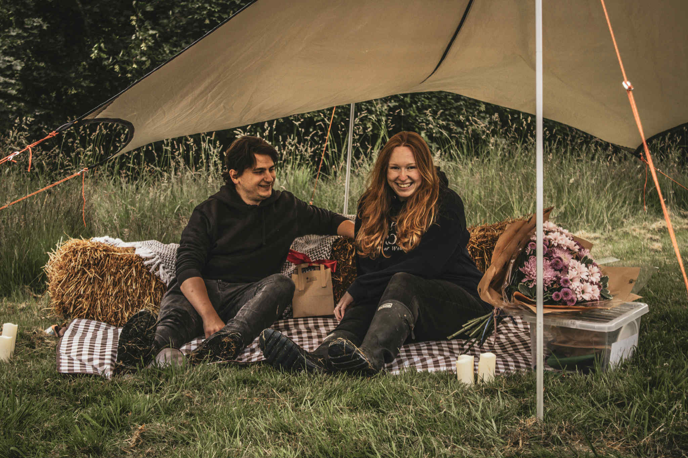
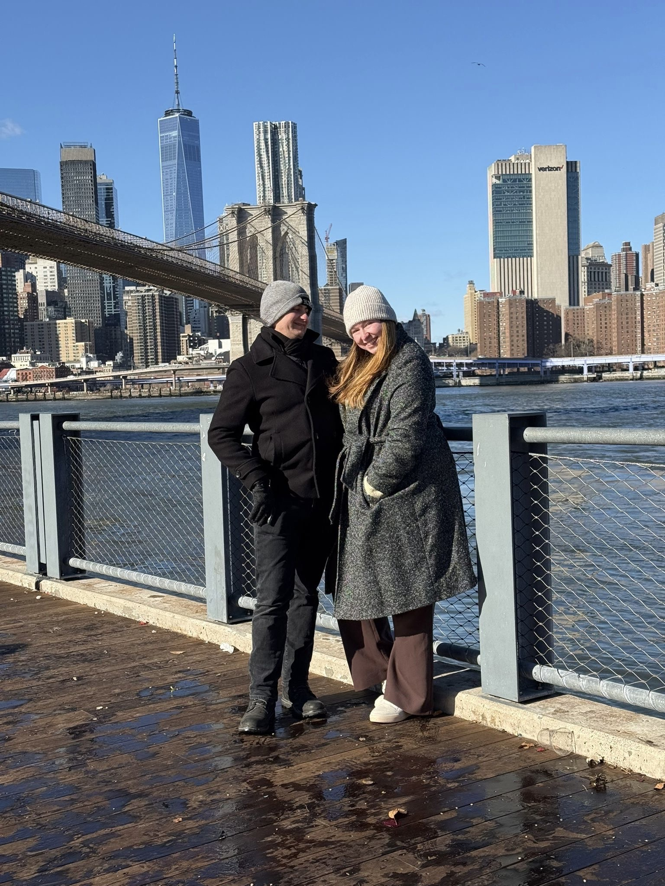
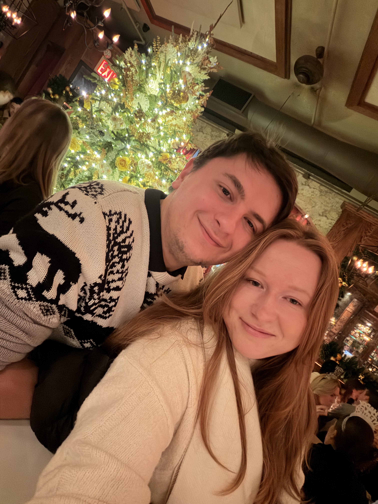
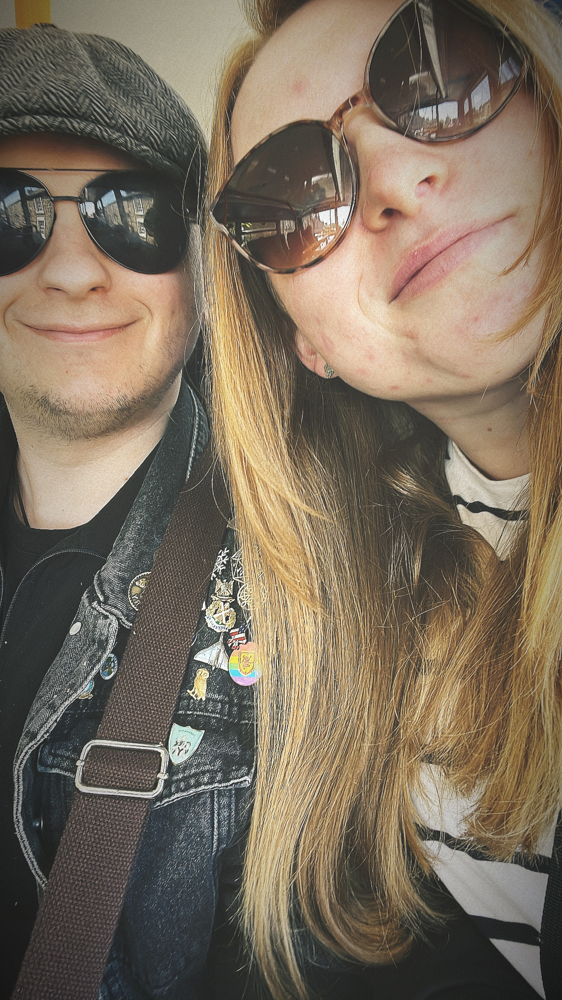
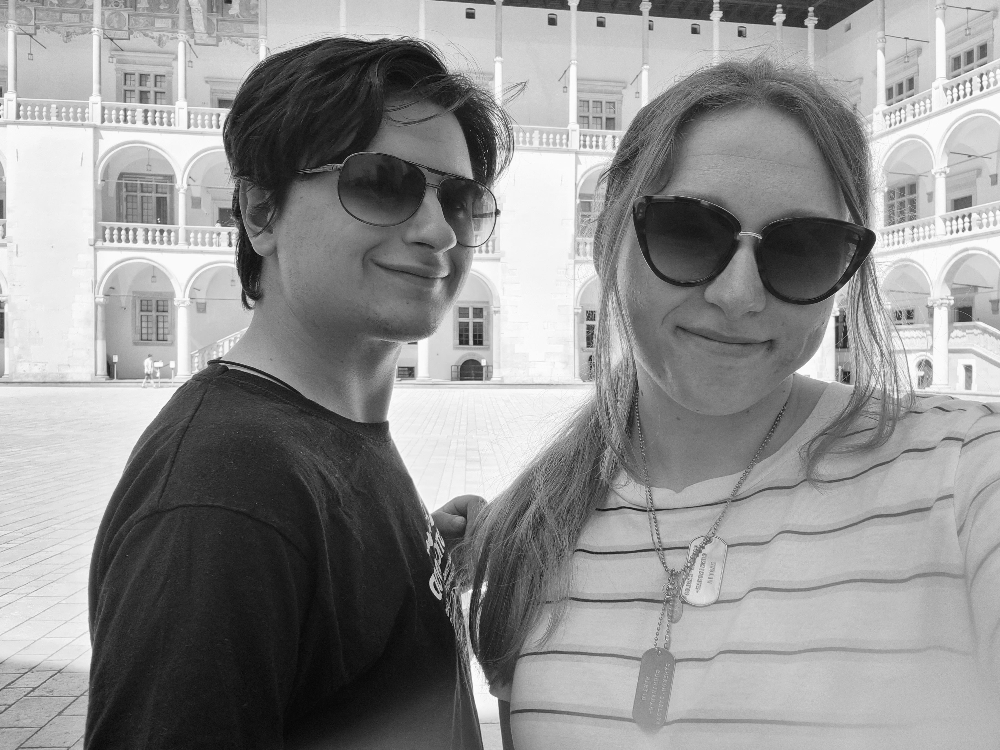

Our Love Story
Kornelia and Cameron met on Tinder in June 2020, thanks in large part to Cameron's dog, Chaos. What started as casual chats quickly became hours-long conversations about dogs, Polish history, and everything in between.
Cameron is slightly nerdy and into history, D&D, and all things geeky, while Kornelia is down-to-earth, curious about psychology, and happiest surrounded by nature and animals. Somehow, their differences just click.
They've lived in Wales and the Lake District, now calling Longridge home. Their favourite times are at Rydal or Lytham Beach, usually with the dogs.
In June 2025, Cameron proposed at a highland cow farm, complete with flowers, prosecco, candles, and a hidden photographer. She said yes with happy tears and laughter, and now they can't wait to celebrate with friends and family.
W czerwcu 2020 roku zupełnie przypadkowe zdjęcie z psem zapoczątkowało coś wyjątkowego. Kornelia trafiła na profil Camerona na Tinderze, a jego fotografia z Chaosem od razu przykuła jej uwagę. To wystarczyło, żeby dać mu szansę. Chwilę później Cameron odezwał się pierwszy i tak zaczęła się ich historia.
Z kilku luźnych wiadomości szybko zrobiły się długie, czasem wielogodzinne rozmowy. Najpierw o psach, potem o historii Polski, a w końcu o wszystkim, co tylko przyszło im do głowy.
Cameron jest miłośnikiem historii, D&D i wszystkiego, co choć trochę geekowe. Kornelia twardo stąpa po ziemi, interesuje się psychologią i najszczęśliwsza jest wtedy, gdy otaczają ją przyroda i zwierzęta. Choć różnią się pod wieloma względami, to właśnie te różnice sprawiają, że tak dobrze się uzupełniają.
W czerwcu 2025 roku Cameron oświadczył się Kornelii na farmie wśród szkockich krów. Były kwiaty, prosecco, świece i ukryty fotograf, który uchwycił ten moment. Kornelia powiedziała „tak", śmiejąc się i jednocześnie płacząc ze szczęścia.
Teraz z radością czekają na wspólne świętowanie z rodziną i przyjaciółmi i na wszystkie przygody, które są jeszcze przed nimi.





